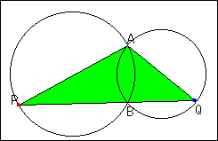

Problem of Two Circles(1)
Problem
Two circles intersect at point A and B. Point P is on one circle, and Point Q is on the other. Line PQ goes through point B.
What do you observe about triangle APQ when point P moves on the circle?

Applet